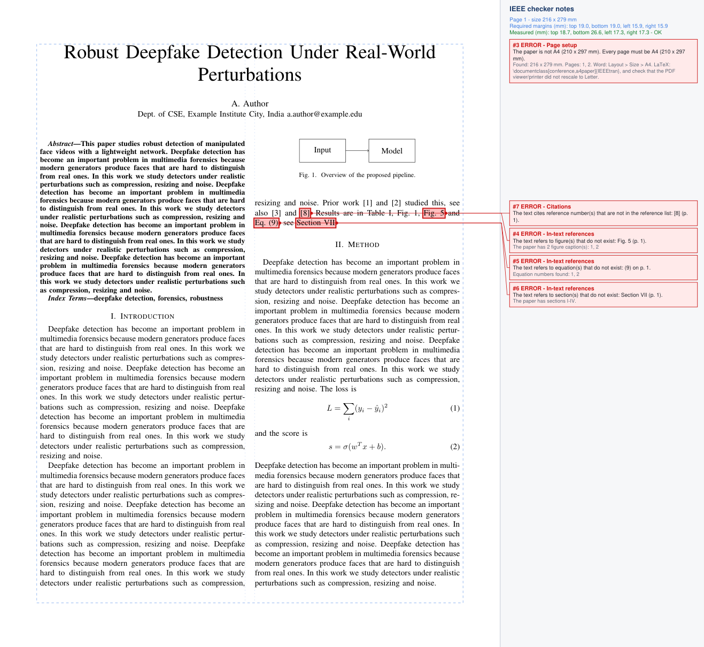
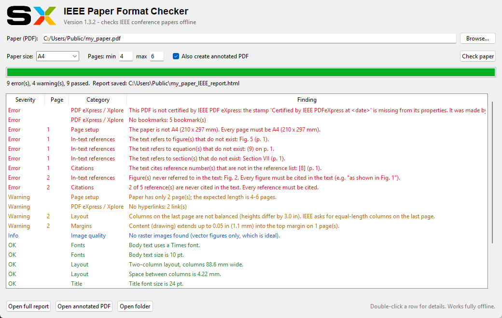
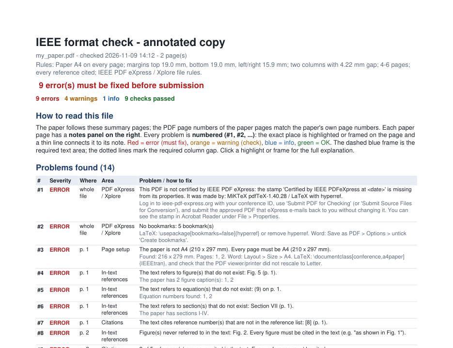

Check your IEEE conference paper
before you submit it
A free desktop app that finds formatting problems in your PDF in seconds and shows exactly where they are. It works offline, so your paper never leaves your computer.
Download
Choose your system. Each installer includes everything it needs, so you don't need to install Python or anything else.
Windows
macOS · Apple silicon
macOS · Intel
Linux
./install.sh.All files are on the GitHub releases page. Every installer is built and tested automatically on real Windows, macOS (Apple silicon and Intel) and Linux machines before it is published.
Install
Takes under a minute. The app is free and not signed by Microsoft or Apple, so your computer asks once whether you trust it.
- Double-click
IEEE-Paper-Checker-Setup-….exe. - If a blue "Windows protected your PC" box appears, click More info → Run anyway.
- Click Next → Install → Finish. No administrator rights are needed.
- Open IEEE Paper Format Checker from the Start Menu, or right-click any PDF → Show more options → Check IEEE format.
Uninstall: Settings → Apps → Installed apps → IEEE Paper Format Checker → Uninstall.
- Open the downloaded
.dmgand drag IEEE-Paper-Checker onto Applications. - Open the app once from Applications. macOS will block it because it is not from the App Store.
- Go to System Settings → Privacy & Security, scroll down and click Open Anyway. (macOS 14 and older: right-click the app → Open → Open.)
- From then on it opens normally. Tip: right-click a PDF → Open With → IEEE-Paper-Checker.
Alternative in Terminal: xattr -dr com.apple.quarantine /Applications/IEEE-Paper-Checker.app. Uninstall: drag the app to the Bin.
- Ubuntu / Debian / Mint: double-click the
.debfile, or runsudo apt install ./ieee-paper-checker_…_amd64.deb. - Other distributions: unpack the
.tar.gzand run./install.sh(installs for your user only). - Open IEEE Paper Format Checker from the applications menu, or run
ieee-paper-checker.
Command line: ieee-check paper.pdf. Uninstall: sudo apt remove ieee-paper-checker or ./install.sh --uninstall.
What it checks
Pick your PDF, press Check paper, and get a list of problems, a full report and an annotated copy of your paper.
Double-blind anonymity
For review: no author names, affiliations, e-mails, acknowledgments, funding, first-person self-citations, identifying links or names hidden in the PDF properties.
Page setup & margins
A4, margins, two columns and the page limit, plus the IEEE template's style rules: single-spaced justified Times 10 pt text, "Fig. 1", "(1)", "[3]", figures at the top or bottom of columns.
Citations
Every reference in the list is cited in the text, every [n] in the text exists, and numbering follows IEEE order.
In-text references
Every figure and table is mentioned, with no references to a Fig. 7, Eq. (9) or Section VII that doesn't exist.
Camera-ready & PDF eXpress
Author details are back, the "Certified by IEEE PDFeXpress" stamp is present, the file wasn't changed afterwards, and all IEEE Xplore file rules are met.
Tables & images
Finds tables pasted as pictures and images below 300 / 600 dpi, including enlarged or blurry ones.
See exactly where the problems are
The annotated PDF highlights each problem on the page and explains it in a notes panel beside it.



Default rules (COSMIC 2026)
Organisers can change these in one file (ieee_checker/spec.py) and rebuild.
| Rule | Requirement |
|---|---|
| Review submission | Double-blind: no author information anywhere in the PDF |
| Camera-ready | Author names and affiliations present; certified by IEEE PDF eXpress |
| Paper size | A4 (210 × 297 mm) on every page |
| Margins | Top and bottom 0.75 in (19 mm), left and right 0.625 in (16 mm) |
| Columns | Two columns, 4.22 mm apart |
| Length | At most 6 pages (editable in the app) |
| Citations | Every reference cited; every citation in the reference list |